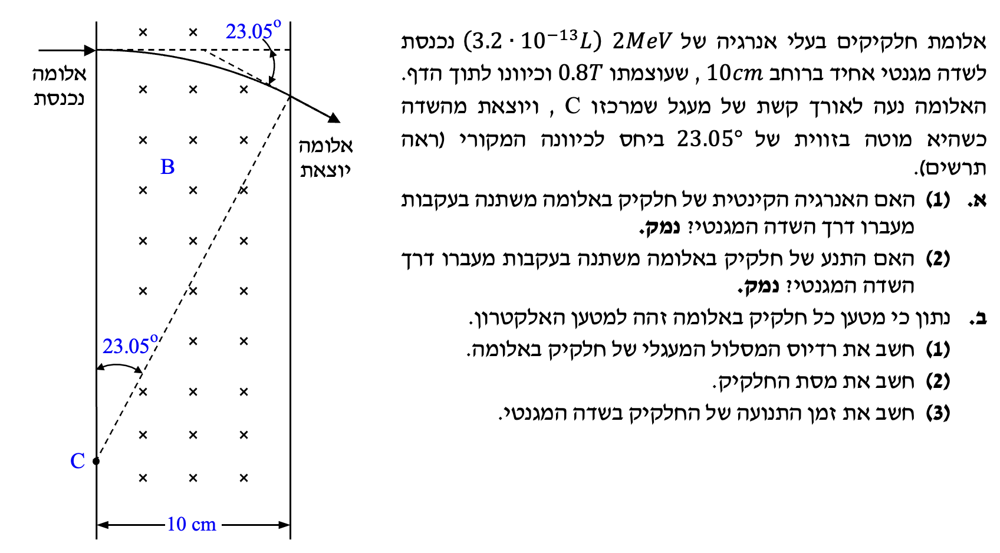

פתרון שאלה 4 - בגרות 1992
חשמל ומגנטיות - תנועת מטען בשדות מוצלבים
פתרון מודרך: בורר מהירויות, תנועה מעגלית וקשר בין פרמטרים.
ver
vAUTO
|
auto

תמונת השאלה המקורית
לא נמצאה תמונה בשם question-image.png באותה תיקייה.
הערת מורה:
בשאלה זו משלבים בין בורר מהירויות לבין תנועה מעגלית בשדה מגנטי. חשוב לזכור:
עובדים ביחידות תקניות, משתמשים בכלל יד ימין לקביעת כיוונים, והכוח המגנטי תמיד ניצב למהירות ולכן משנה כיוון תנועה ולא את גודל המהירות.
מה נתון: החלקיקים נכנסים מלמטה עם \( \vec{v} \) כלפי מעלה, והשדה המגנטי \( \vec{B} \) לתוך הדף. אחרי המעבר ב-\( O \) הם פוגעים ב-\( K \) שנמצאת מימין ל-\( O \).
מה מחפשים: האם המטען חיובי או שלילי.
נוסחאות מהדף:
\( F = qvB\sin\alpha \)
פתרון צעד-אחר-צעד:
- במצב המתואר \( \alpha = 90^\circ \), לכן גודל הכוח המגנטי מקסימלי ופועל בניצב למהירות ולשדה.
- מן המסלול רואים שהכוח הצנטריפטלי בפועל הוא ימינה (כי החלקיק מתעקם ימינה).
- לפי כלל יד ימין למטען חיובי, עבור מהירות למעלה ושדה לתוך הדף הכוח היה אמור לצאת שמאלה.
- מכיוון שבפועל הכוח ימינה, סימן המטען הפוך ממטען חיובי.
מסקנה: המטען שלילי \( q<0 \).
הערת מורה:
כשמופיע בדף נוסחאות "גודל כוח", יש לעבוד עם גודל המטען (בערך מוחלט) לחישוב הגודל,
ואת הכיוון לקבוע בנפרד לפי כלל יד ימין וסימן המטען.
מה נתון: בבורר (בין \( M \) ו-\( N \)) החלקיקים נעים בקו ישר, וידוע כבר שהם שליליים.
מה מחפשים: כיוון \( \vec{E} \).
נוסחאות מהדף:
\( \Sigma \vec{F}=0 \)
\( \vec{F}_E = q\vec{E} \)
פתרון:
- תנועה ישרה מחייבת שקול כוחות אפס: \( \vec{F}_E = -\vec{F}_B \).
- הכוח המגנטי על החלקיקים השליליים הוא ימינה, לכן הכוח החשמלי חייב להיות שמאלה.
- מאחר ש-\( q<0 \), הכוח החשמלי בכיוון הפוך לכיוון השדה החשמלי.
מסקנה: השדה החשמלי \( \vec{E} \) מכוון ימינה (מ-\( N \) ל-\( M \)).
הערת מורה:
השדה החשמלי מוגדר לפי הכוח על מטען חיובי. לכן עבור מטען שלילי הכוח וההשדה בכיוונים מנוגדים.
מה נתון: בבורר יש שדות מוצלבים \( E,B \) והחלקיק עובר ישר; לאחר מכן באזור מגנטי בלבד החלקיק נע בחצי מעגל עד \( K \).
מה מחפשים: ביטוי ל-\( OK \) באמצעות \( E,B,m,q \).
נוסחאות מהדף:
\( \Sigma F = ma \)
\( a_R = \frac{v^2}{R} \)
פתרון צעד-אחר-צעד:
\[
|q|E = |q|vB \Rightarrow v = \frac{E}{B}
\]
\[
|q|vB = m\frac{v^2}{R} \Rightarrow R = \frac{mv}{|q|B}
\]
\[
R = \frac{m(E/B)}{|q|B} = \frac{mE}{|q|B^2}
\]
\[
OK = 2R = \frac{2mE}{|q|B^2}
\]
מסקנה: \( OK = \frac{2mE}{|q|B^2} \).
הערת מורה:
כדאי לזהות את "הגשר" בין האזורים: בבורר נקבעת המהירות \( v=E/B \),
ומהירות זו נכנסת לנוסחת הרדיוס באזור המגנטי.
מה נתון: רוצים להקטין את \( OK \), מותר לשנות רק את עוצמות \( E,B \), ומהירות החלקיקים הנכנסים נשארת קבועה.
מה מחפשים: מה צריך לשנות בשדות.
ניתוח:
\[
OK = 2R = \frac{2mv}{|q|B}
\]
- כאשר \( m,|q|,v \) קבועים, כדי להקטין \( OK \) צריך להגדיל \( B \).
- אבל כדי לשמור מעבר ישר בבורר לאותה מהירות, חייב להישמר \( v=E/B \).
- לכן עם הגדלת \( B \) צריך להגדיל גם את \( E \) באותו יחס, כך שהיחס \( E/B \) יישאר קבוע.
מסקנה: יש להגדיל גם את \( B \) וגם את \( E \) באותו יחס.
הערת מורה:
שינוי חד-צדדי של \( E \) או \( B \) בלבד משנה את תנאי בורר המהירויות,
ולכן החלקיקים הרצויים עלולים כלל לא לעבור דרך החריץ.